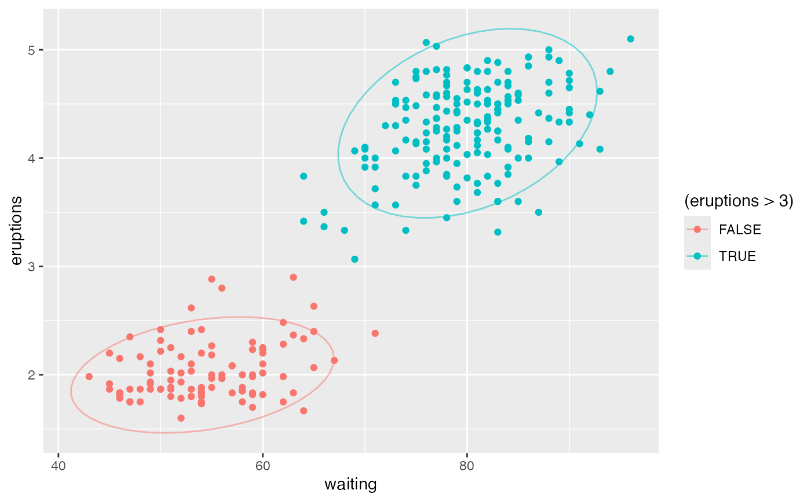
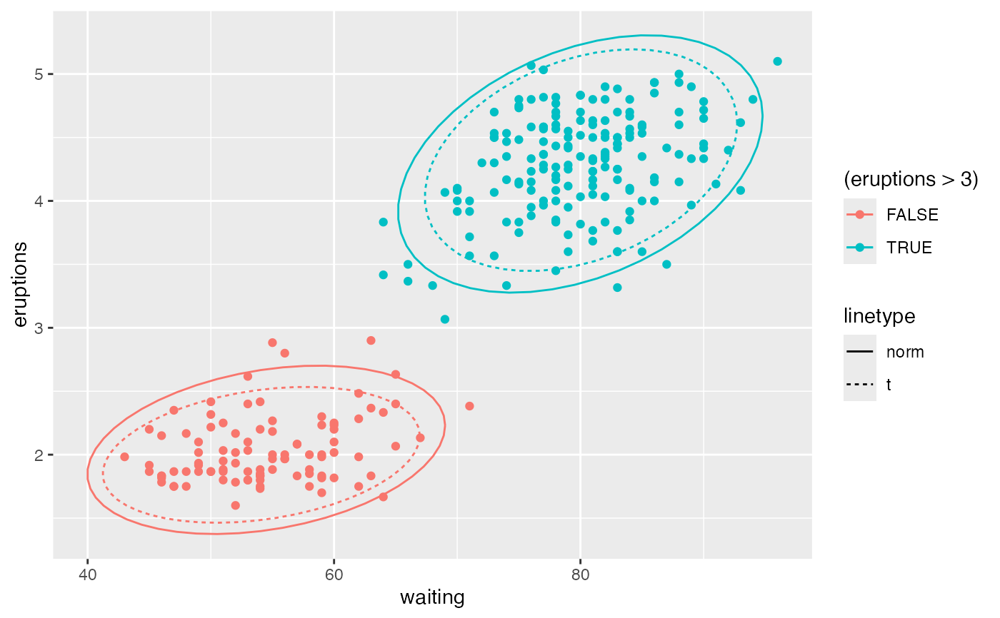
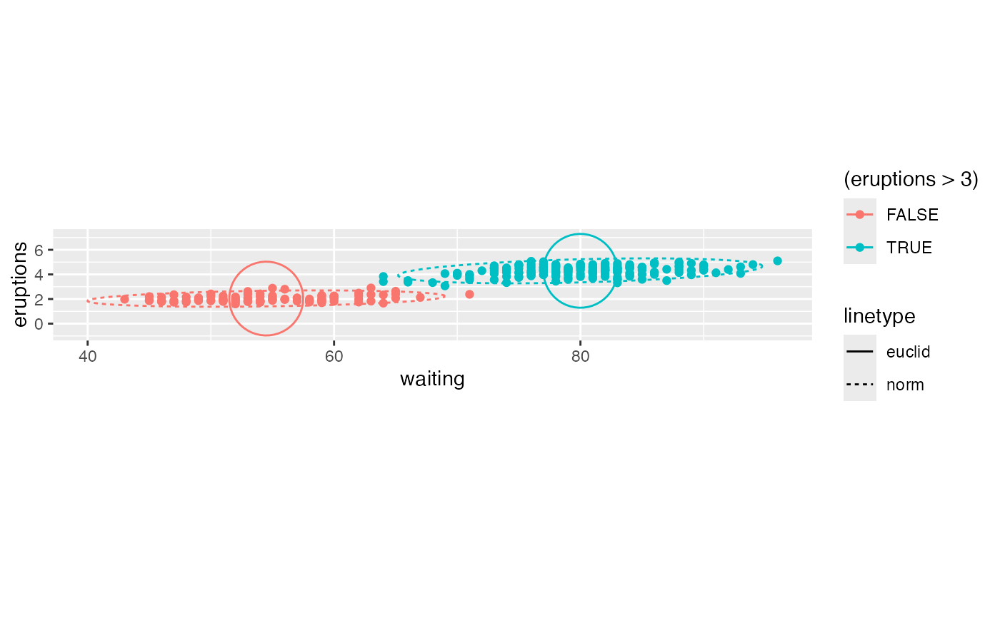
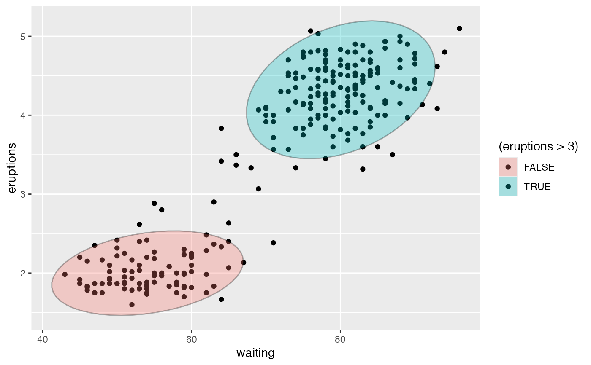
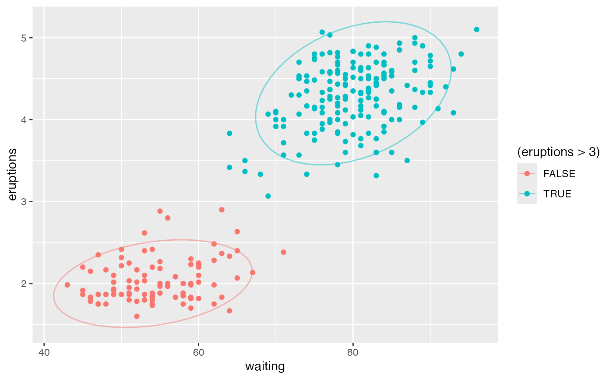
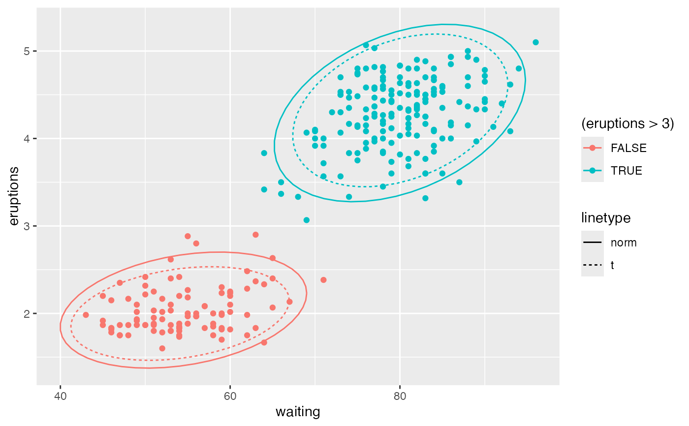
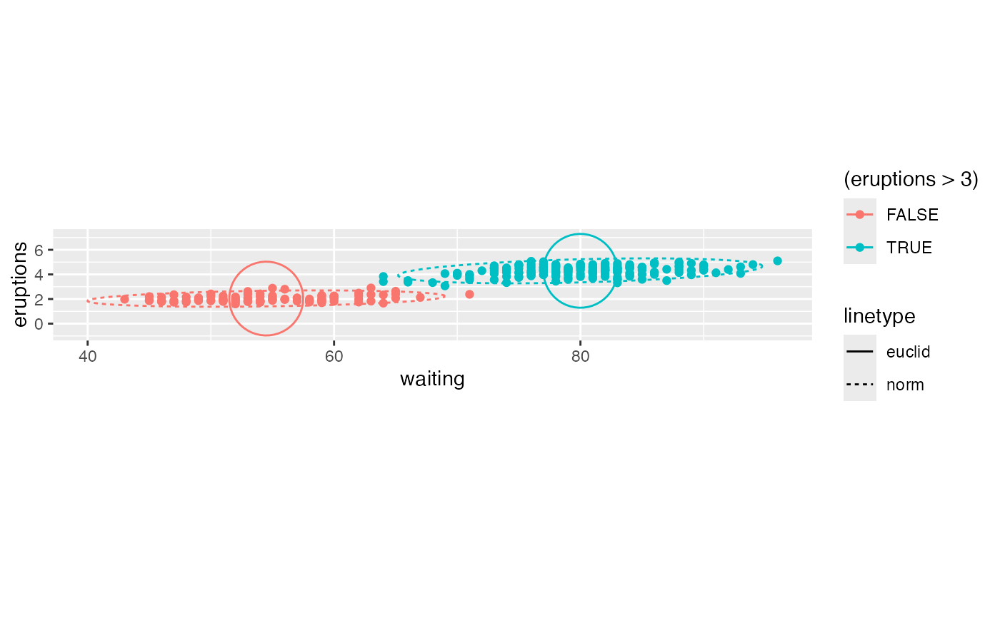
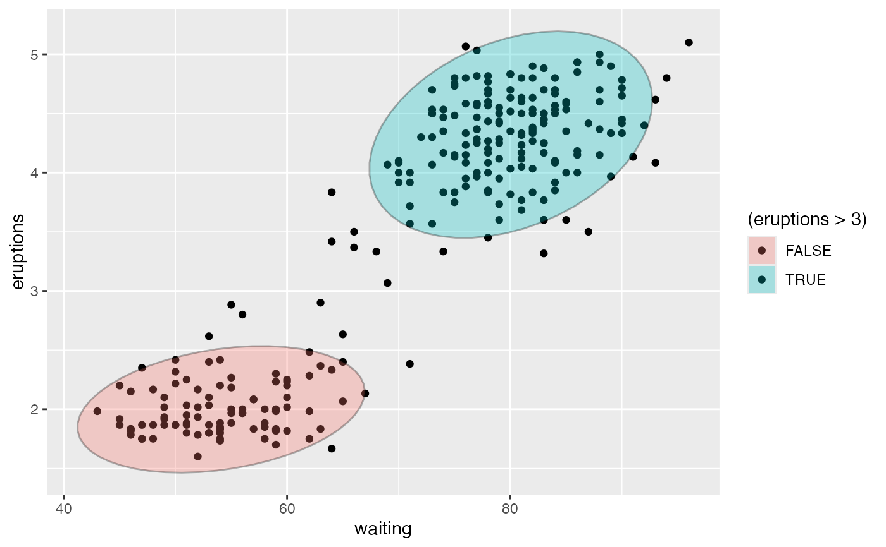

Formula interface to ggplot2::stat_ellipse().
gf_ellipse(
object = NULL,
gformula = NULL,
data = NULL,
...,
alpha,
color,
group,
type = "t",
level = 0.95,
segments = 51,
xlab,
ylab,
title,
subtitle,
caption,
geom = "path",
stat = "ellipse",
position = "identity",
show.legend = NA,
show.help = NULL,
inherit = TRUE,
environment = parent.frame()
)Arguments
- object
When chaining, this holds an object produced in the earlier portions of the chain. Most users can safely ignore this argument. See details and examples.
- gformula
A formula with shape
y ~ x. Faceting can be achieved by including|in the formula.- data
A data frame with the variables to be plotted.
- ...
Additional arguments. Typically these are (a) ggplot2 aesthetics to be set with
attribute = value, (b) ggplot2 aesthetics to be mapped withattribute = ~ expression, or (c) attributes of the layer as a whole, which are set withattribute = value.- alpha
Opacity (0 = invisible, 1 = opaque).
- color
A color or a formula used for mapping color.
- group
Used for grouping.
- type
The type of ellipse. The default
"t"assumes a multivariate t-distribution, and"norm"assumes a multivariate normal distribution."euclid"draws a circle with the radius equal tolevel, representing the euclidean distance from the center. This ellipse probably won't appear circular unlesscoord_fixed()is applied.- level
The level at which to draw an ellipse, or, if
type="euclid", the radius of the circle to be drawn.- segments
The number of segments to be used in drawing the ellipse.
- xlab
Label for x-axis. See also
gf_labs().- ylab
Label for y-axis. See also
gf_labs().- title, subtitle, caption
Title, sub-title, and caption for the plot. See also
gf_labs().- geom
Geom for drawing ellipse. Note:
"polygon"allows fill;"path"does not; on the other hand,"path"allowsalphato be applied to the border, while"polygon"appliesalphaonly to the interior.- stat
A character string naming the stat used to make the layer.
- position
Either a character string naming the position function used for the layer or a position object returned from a call to a position function.
- show.legend
A logical indicating whether this layer should be included in the legends.
NA, the default, includes layer in the legends if any of the attributes of the layer are mapped.- show.help
If
TRUE, display some minimal help.- inherit
A logical indicating whether default attributes are inherited.
- environment
An environment in which to look for variables not found in
data.
See also
Examples
gf_ellipse()
#> gf_ellipse() uses
#> * a formula with shape y ~ x.
#> * geom: path
#> * stat: ellipse
#> * key attributes: alpha, color, group, type = "t", level = 0.95, segments =
#> 51
#>
#> For more information, try ?gf_ellipse
gf_point(eruptions ~ waiting, data = faithful) %>%
gf_ellipse(alpha = 0.5)
 gf_point(eruptions ~ waiting, data = faithful, color = ~ (eruptions > 3)) %>%
gf_ellipse(alpha = 0.5)

gf_point(eruptions ~ waiting, data = faithful, color = ~ (eruptions > 3)) %>%
gf_ellipse(type = "norm", linetype = ~ "norm") %>%
gf_ellipse(type = "t", linetype = ~ "t")

gf_point(eruptions ~ waiting, data = faithful, color = ~ (eruptions > 3)) %>%
gf_ellipse(type = "norm", linetype = ~ "norm") %>%
gf_ellipse(type = "euclid", linetype = ~ "euclid", level = 3) %>%
gf_refine(coord_fixed())

# Use geom = "polygon" to enable fill
gf_point(eruptions ~ waiting, data = faithful, fill = ~ (eruptions > 3)) %>%
gf_ellipse(geom = "polygon", alpha = 0.3, color = "black")
gf_point(eruptions ~ waiting, data = faithful, fill = ~ (eruptions > 3)) %>%
gf_ellipse(geom = "polygon", alpha = 0.3) %>%
gf_ellipse(alpha = 0.3, color = "black")

gf_ellipse(eruptions ~ waiting, data = faithful, show.legend = FALSE,
alpha = 0.3, fill = ~ (eruptions > 3), geom = "polygon") %>%
gf_ellipse(level = 0.68, geom = "polygon", alpha = 0.3) %>%
gf_point(data = faithful, color = ~ (eruptions > 3), show.legend = FALSE)
gf_point(eruptions ~ waiting, data = faithful, color = ~ (eruptions > 3)) %>%
gf_ellipse(alpha = 0.5)

gf_point(eruptions ~ waiting, data = faithful, color = ~ (eruptions > 3)) %>%
gf_ellipse(type = "norm", linetype = ~ "norm") %>%
gf_ellipse(type = "t", linetype = ~ "t")

gf_point(eruptions ~ waiting, data = faithful, color = ~ (eruptions > 3)) %>%
gf_ellipse(type = "norm", linetype = ~ "norm") %>%
gf_ellipse(type = "euclid", linetype = ~ "euclid", level = 3) %>%
gf_refine(coord_fixed())

# Use geom = "polygon" to enable fill
gf_point(eruptions ~ waiting, data = faithful, fill = ~ (eruptions > 3)) %>%
gf_ellipse(geom = "polygon", alpha = 0.3, color = "black")
gf_point(eruptions ~ waiting, data = faithful, fill = ~ (eruptions > 3)) %>%
gf_ellipse(geom = "polygon", alpha = 0.3) %>%
gf_ellipse(alpha = 0.3, color = "black")

gf_ellipse(eruptions ~ waiting, data = faithful, show.legend = FALSE,
alpha = 0.3, fill = ~ (eruptions > 3), geom = "polygon") %>%
gf_ellipse(level = 0.68, geom = "polygon", alpha = 0.3) %>%
gf_point(data = faithful, color = ~ (eruptions > 3), show.legend = FALSE)